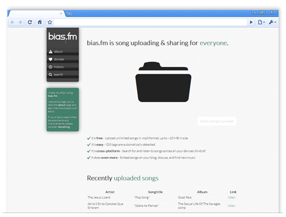
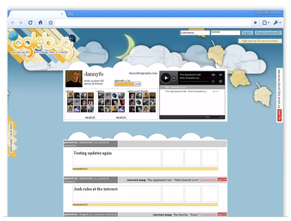
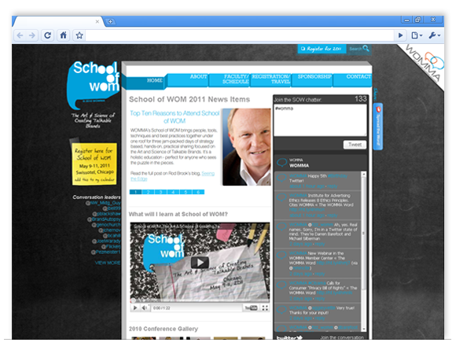
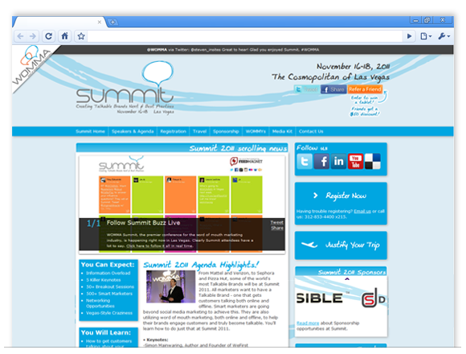
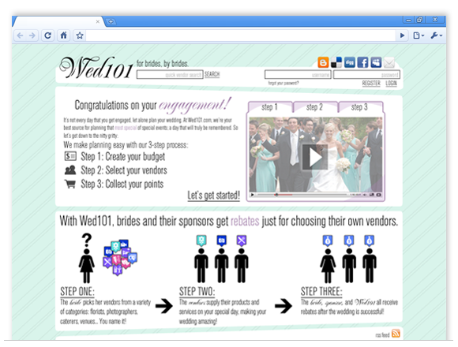
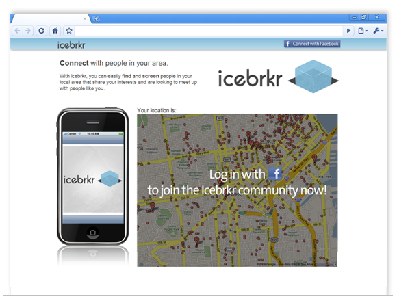
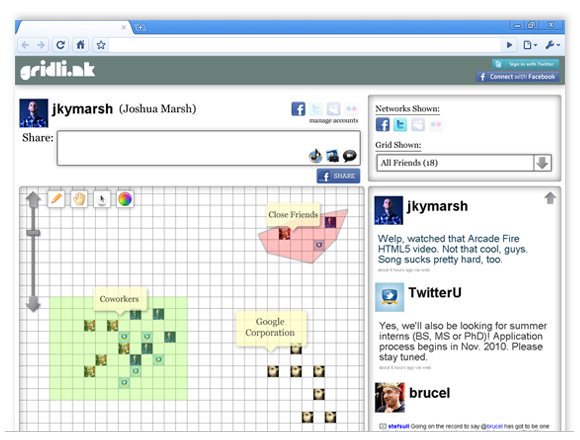
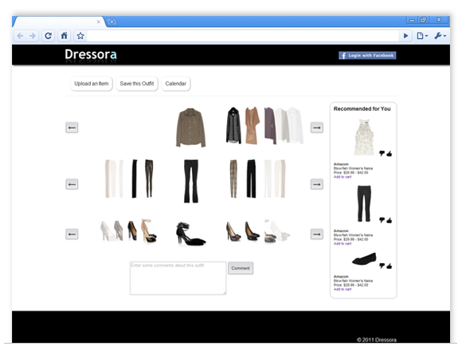

j. ky marsh
projects & portfolio
In addition to the variety of projects and code samples available on my Github profile, I've thrown together this page for those of you hoping for a more visual glance at some of my work.
websites & web applications

Bias.fm is a personal project and side venture I've been working on recently. It's a Codeigniter (PHP) application intended to make song uploading and sharing easy for all users. This project makes use of an assortment of HTML5 features, including the File API and a number of other Javascript implementations, including an ID3 tag-reading library, a search library, and a wide variety of hand-written vanilla JS and jQuery.

Oglebug was a social networking site based on from-scratch PHP and Javascript codebases. On this project, I took on the role of Lead Front-End Developer, building the UI and assisting the designer with converting graphic assets into valid HTML/CSS.


As Web Producer for the Word of Mouth Marketing Association, my primary task was to convert web designers' work into modern, standards-based HTML/CSS webpages. This included adding interactive page and UI elements to delight the user and make their browsing experience straightforward and enjoyable.

Wed101 was an e-commerce site built on Drupal and targeted at brides and soon-to-be-married couples. I worked on a variety of UI iterations to improve the overall experience of using Wed101, as well as make it more streamlined and logical.
desktop & mobile applications
A desktop application I developed for Windows/Linux/OSX platforms is available on my Github account. This project, entitled "tiAudioDesktop," is a working prototype for a minimalist desktop audio player. It's a work-in-progress that I'm hoping to release at some point in the future.
mockups & prototypes

Icebrkr was a prototype of a near-field communications-based social networking application for mobile devices. I worked on the front-end development for this project, developing a working prototype of both the website, which used a geolocation Javascript library, and variety of mockups for mobile devices.

Gridlink was another social networking site focused on ways to revolutionize the social networking paradigm. I developed a range of mockups for the site, as well as a working prototype, developed almost entirely in Javascript.

Dressora is a clothing/outfit planner intended for implementation both as a web and mobile application. I developed a working prototype using the HTML5 canvas element, creating a dynamic, coverflow-style rotator for selecting clothing.